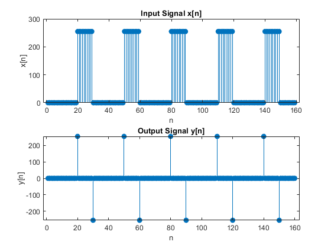
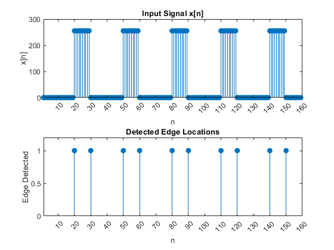

FIR Filtering of Images: Lab P-10: 3 Lab Excercise
Finding Edges: 1-D Filter Cascaded with Nonlinear Operators
Contents
3.1a)
% input signal xx = 255*(rem(1:159,30)>19); % filter coefficients bb = [1, -1]; % implement first-difference filter. y = firfilt(xx, bb); % firfilt() is placed into matlab toolbox figure(1); disp(length(xx)); % Plot input signal subplot(2, 1, 1); stem(xx, 'filled'); title('Input Signal x[n]'); xlabel('n'); ylabel('x[n]'); % Plot output signal subplot(2, 1, 2); stem(y, 'filled'); title('Output Signal y[n]'); xlabel('n'); ylabel('y[n]');
159
3.1b)
The FIR filter y[n] = (1)*x[n] + (-1)*x[n-1] takes the difference between the current and previous data points and this difference indicates whether there is an edge or not. In a flat region there will be no edge as x[n] will be the same as x[n-1]. An edge will appear if there is a large change between the current and previous data point such as transistion between 0 and 255. This FIR filter is essensially a high pass filter.
3.1c)
The length of the output signal after convolution will be L = N + M - 1. So in this example N is the length of x[n] (159) and M is the filter length which in this case is 2 which means that the length of y[n] is 159 + 2 - 1 = 160.
3.1d)
Use a non linear operator to show where an edge occurs in the signal.
% Threshold the output threshold = 50; 50 d = abs(y) > threshold; % Sparse output
ans =
50
3.1e)
this code simplified the output of the filter and shows where the edges occure by plotting a 1 or a 0. The find(d) function will detect the edge just after the transistion. This is due to the way the filter is only using past values for comparison.
% Find impulse locations locations = find(d); figure(2); % Plot input signal subplot(2, 1, 1); stem(xx, 'filled'); title('Input Signal x[n]'); xlabel('n'); ylabel('x[n]'); xlim([1 length(d)]); xticks(0:10:length(d)); % Plot edge locations subplot(2, 1, 2); stem(locations, ones(size(locations)), 'filled'); title('Detected Edge Locations'); xlabel('n'); ylabel('Edge Detected'); % Ensure both plots use the same x-axis xticks(0:10:length(d)); xlim([1 length(d)]); ylim([0 1.2]);